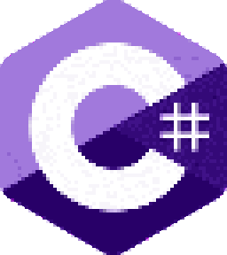

WELCOME TO MY PROJECT PORTFOLIO!

Projects I have worked on:
PROJ_01: AGAMA-Toolkit
[Python | Backend | Data Science]
TODO
PROJ_02: Satisfactory Academic Progress (SAP) Appeal Website
[C# | Backend | Frontend | Azure | CosmosDB] 
The Satisfactory Academic Progress (SAP) App is a full-stack web application developed for the Financial Aid Department at Saint Martin’s University to modernize the student appeal process. Designed to replace a cumbersome paper-based system, the app facilitates a three-part workflow between students, academic advisors, and financial aid administrators. Students can submit digitized appeal forms and track their progress via a real-time status bar; advisors can review and sign off on academic plans; and administrators can manage the entire backlog through a centralized dashboard. To ensure the application was accessible to the university's diverse student body, I prioritized a responsive design and included multilingual support for both English and Spanish.
I built the application using the C# Blazor framework, leveraging its component-based architecture to create a reactive and high-performance frontend. The backend utilizes ASP.NET Core and Entity Framework Core to interface with an Azure CosmosDB database instance, providing a scalable and secure solution for data storage. Security and compliance were paramount given the sensitive nature of financial aid data; therefore, I integrated OAuth 2.0 Single Sign-On (SSO) for secure authentication and implemented industry-standard encryption to ensure FERPA compliance. This project highlights my proficiency in the Microsoft web ecosystem and my ability to deliver enterprise-ready software that solves complex organizational challenges.
PROJ_03: WikimonGO
[C# | Backend | AWS | API]
WikimonGo is a cross-platform mobile application designed to turn world exploration into an interactive, educational experience. Developed using .NET MAUI, the app leverages the Wikipedia API and Google Geolocation API to identify and display geotagged articles as interactive pins on a map. Users can explore their immediate surroundings to discover hidden landmarks, read historical trivia, and engage with a community of fellow explorers through social features like favoriting locations and leaving comments. By blending location-based discovery with social media elements, the project creates a unique platform for "adventurers" and tourists to learn about the world in real-time.
On the technical side, I helped architect a robust, scalable backend utilizing AWS services, including RDS (MySQL) for data persistence and Python-based Lambda functions for efficient data processing through a REST API. To ensure compliance with Wikipedia’s API traffic policies, the system was designed to distribute API calls among end-users while utilizing a custom caching layer to minimize redundant requests. The project highlights my ability to integrate complex third-party APIs with cloud-native infrastructure, while maintaining a focus on performance and cross-platform accessibility for both iOS and Android users.
About me:

DOWNLOAD RESUME
My journey with learning to program started in the world of Minecraft modding, where I began my passion by trying to figure out how to write Java. What began as a hobby turned into a deep-seated passion for building robust, logical systems.
Today, I am a Computer Science graduate from Saint Martin’s University (GPA 3.94) focused on backend development. I primarily work on backend systems, such as APIs, database design, and handling complex data manipulation. My experience ranges from building high-performance Python libraries for astrophysics research to managing operations as a Library Supervisor. This unique blend of technical rigor and leadership experience allows me to build software that is not only efficient but also aligned with user and team needs.
When I’m not at my desk, you can usually find me out in nature with my phone doing nature photography or curled up with a good book.
Contact me!
Phone: mdallytc64@gmail.com
Text: 360-486-4820

Last updated: 12/28/2025